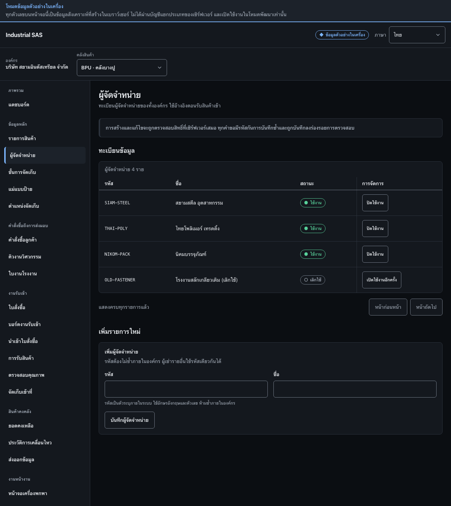

สร้างผู้จัดจำหน่ายCreate a supplier
เพิ่มผู้จัดจำหน่ายเข้าทะเบียน และปิดหรือเปิดใช้งานผู้จัดจำหน่ายที่มีอยู่Add a supplier to the register, and deactivate or reactivate an existing one.
สิ่งที่ต้องมีก่อนเริ่มBefore you start
- เลือกคลังสินค้าที่ต้องการทำงานแล้วA warehouse is selected
- ทราบรหัสและชื่อผู้จัดจำหน่ายที่ใช้ในเอกสารจัดซื้อThe supplier code and name used on purchasing documents are known

ขั้นตอนSteps
- ที่กรอบ 1 ใช้ปุ่มในคอลัมน์การจัดการเมื่อต้องการปิดหรือเปิดใช้งานผู้จัดจำหน่ายIn box 1, use the buttons in the management column to deactivate or reactivate a supplier.
- ที่กรอบ 2 กรอกรหัสและชื่อผู้จัดจำหน่าย แล้วกด “บันทึกผู้จัดจำหน่าย”In box 2, enter the supplier code and name, then press “Save supplier”.
ตรวจว่างานสำเร็จอย่างไรHow to tell it worked
- ผู้จัดจำหน่ายปรากฏในทะเบียนและมีสถานะ “ใช้งาน”The supplier appears in the register with status “Active”.
- ผู้จัดจำหน่ายที่ไม่ใช้แล้วถูกปิดการใช้งาน ไม่ถูกลบA supplier no longer used is deactivated, never deleted.